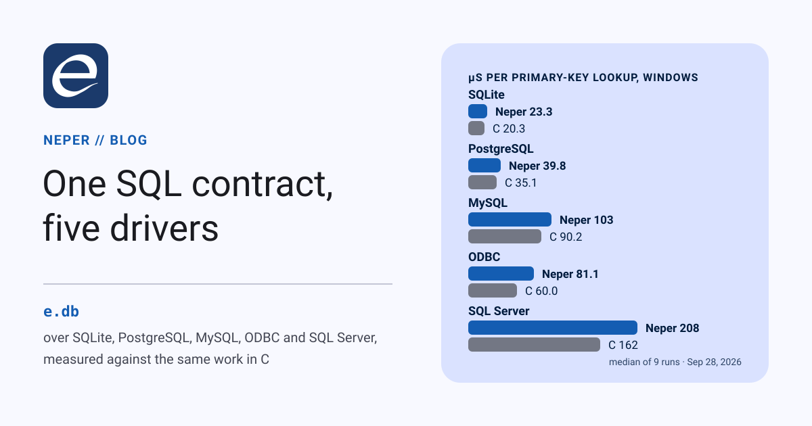

One SQL contract, four drivers

Neper's standard library has had a database contract, e.db, for a while, with nothing behind it. Today it has four drivers: SQLite, PostgreSQL, MySQL and ODBC. Each binds a C library the vendor or the operating system provides, and each is tested against a live database on Windows and Linux. This post walks through the contract, shows how to write a driver, explains what differs between the four, and ends with numbers: the same workload in Neper, C, Go and Rust, and which one wins.
This post first appeared with three drivers. The fourth, x.microsoft.odbc, landed later the same day, and every number below is from a new run on September 28 that covers all four.
The contract
e.db is deliberately small. It defines four handles, one table of functions, a value type and five errors:
type Connection = struct { ctx: *void, driver: *const Driver }
type Statement = struct { ctx: *void, driver: *const Driver }
type Rows = struct { ctx: *void, driver: *const Driver }
type Transaction = struct { ctx: *void, driver: *const Driver }
type Value = union enum u8 { Null, Bool: bool, I64: i64, U64: u64, F64: f64, Text: str, Bytes: []const u8, Time: time.Instant }
type Parameter = struct { name: str, value: Value }
type Column = struct { name: str, kind: ValueKind, nullable: bool }
type Driver = struct { close: fn(ctx: *void) -> err, prepare: ..., execute: ..., query: ..., begin: ...,
statement_close: ..., statement_execute: ..., statement_query: ...,
rows_columns: ..., rows_next: fn(ctx: *void, dst: []Value) -> (bool, err), rows_next_borrowed: ..., rows_close: ...,
transaction_execute: ..., transaction_query: ..., transaction_commit: ..., transaction_rollback: ... }
error Closed
error InvalidQuery
error Constraint
error Busy
error Unsupported- A handle is a context plus a table. Every
e.dbcall dispatches through the table. Closing, committing or rolling back sets the context tonil, and anilhandle answersClosedwithout reaching the driver. So a double close, or a query after commit, behaves the same under every driver, and no driver has to write that logic. - Values are one tagged union of eight kinds. Parameters are positional or named. Columns report a kind, and
rows_nextfills a caller-owned row, which is a slice ofValue. Its text stays valid until the next row, even after the reader is closed;rows_next_borrowedhands back the library's own bytes, which are valid only until the next row or the close. - Five portable errors, and each driver adds its own. Code that only needs to know "was it a constraint" stays portable, and a driver's
detailcall returns the vendor's code and message when you need them. - Nothing is hidden. There is no driver registry, no global pool and no hidden allocator. The arena you pass to a driver's
openis the only memory it uses, and each driver documents what it keeps there. (e.db.poolexists as a pure state machine for when you do want pooling.)
Using it
This is examples/db/quickstart, in full:
use e.io
use e.mem
use e.db
use x.sqlite.sqlite
fn main(a: *mem.Arena) -> err {
var c = try sqlite.open(a, ":memory:")
let created = try db.execute(&c, "CREATE TABLE lang(name TEXT NOT NULL, year INTEGER)", zero)
var tx = try db.begin(&c)
var p: [2]db.Parameter = zero
p[0] = db.Parameter { name: "", value: db.Value{ Text: "Neper" } }
p[1] = db.Parameter { name: "", value: db.Value{ I64: 2026i64 } }
let inserted = try db.execute_transaction(&tx, "INSERT INTO lang VALUES (?, ?)", p[0..])
try db.commit(&tx)
var rows = try db.query(&c, "SELECT name, year FROM lang", zero)
var row: [2]db.Value = zero
while true {
let more = try db.reader_next_err(&rows, row[0..])
if !more { break }
switch row[0] {
case .Text as name:
try io.printf["{}\n"](name)
default:
ret db.InvalidQuery
}
}
try db.close_rows(&rows)
ret db.close(&c)
}Replace the open line with libpq.open(a, "host=… dbname=…"), mysql.open(a, options) or odbc.open(a, "DSN=…") and the rest of the program is unchanged. The one exception is PostgreSQL's parameter spelling, $1 rather than ?.
Writing a driver
A driver is three things: a context struct, fifteen functions with the table's signatures, and an open that fills in the table. examples/db/memory_driver is a complete driver in about 170 lines that keeps its rows in memory. It is worth reading whole, and it comes down to four steps.
1. A context behind every handle. The driver decides what ctx points at. A real driver keeps its library handle there; this one keeps rows.
type Store = struct { ids: [64]i64, names: [64]str, count: usize, committed: usize,
in_transaction: bool, cursor: usize, columns: [2]db.Column }
fn store_of(ctx: *void) -> *Store { ret mem.cast[*Store](ctx) }2. The functions. Each receives the context and answers in e.db's terms. The row reader is the interesting one:
// Committed rows are visible outside a transaction; inside one, all of them.
fn m_rows_next(ctx: *void, dst: []db.Value) -> (bool, err) {
let s = store_of(ctx)
if dst.len < 2usize { ret (false, db.InvalidQuery) }
var visible = s.committed
if s.in_transaction { visible = s.count }
if s.cursor >= visible { ret (false, ok) }
dst[0] = db.Value{ I64: s.ids[s.cursor] }
dst[1] = db.Value{ Text: s.names[s.cursor] }
s.cursor += 1usize
ret (true, ok)
}3. Hand back only the context. A Rows, Statement or Transaction that a driver returns carries just its context. e.db copies in the table from the connection it came from, so a driver never passes its own table around.
fn m_query(ctx: *void, sql: str, params: []const db.Parameter) -> (db.Rows, err) {
var rows: db.Rows = zero
if !str.eq(sql, "SELECT id, name FROM t") { ret (rows, db.InvalidQuery) }
store_of(ctx).cursor = 0usize
rows.ctx = ctx
ret (rows, ok)
}4. Fill the table once and hand out the connection.
fn open(s: *Store, driver: *db.Driver) -> db.Connection {
driver.close = m_close
driver.execute = m_execute
driver.query = m_query
driver.rows_next = m_rows_next
driver.rows_next_borrowed = m_rows_next // its rows are already its own
// ... the other eleven
ret db.Connection { ctx: mem.cast[*void](s), driver: driver }
}Binding a C library
The four real drivers follow one layout. A small module holds nothing but the C declarations, one variant file per OS. The driver module next to it is portable Neper and never names a library.
// lib/x/postgresql/capi.linux.e (capi.windows.e is identical but for "libpq.dll")
@import("libpq.so.5", "PQsendQueryParams")
extern fn send_query_params(conn: usize, command: *const u8, count: i32, types: usize,
values: usize, lengths: usize, formats: usize, result_format: i32) -> i32
@import("libpq.so.5", "PQgetvalue")
extern fn getvalue(result: usize, row: i32, column: i32) -> *u8- Handles are addresses.
PGconn*andsqlite3_stmt*cross asusize. An array that may be null when empty also crosses as theusizeaddress of its first element. - Foreign bytes are read through a view.
mem.viewover an arena header whose base is the C pointer names the bytes without copying them, and the driver copies what it keeps into its own buffer. - An import costs nothing until it is called. A program that never opens a database has no dependency on the library.
- Two lessons cost us a debugging session each. Arena memory is not zeroed: a reader context written field by field left one slice as garbage, so every context is now assigned as one struct literal. And C's
unsigned longis 32 bits on Windows but 64 on Linux, which is why MySQL's binding is the one pair of variants that differ in more than a library name.
SQLite: x.sqlite.sqlite
- The library the OS already ships. The driver binds
winsqlite3.dll(in System32 since Windows 10) andlibsqlite3.so.0, so nothing needs installing. The floor is SQLite 3.7.14, the version that addedsqlite3_close_v2. - A query steps once before it returns. That way bad SQL fails at
query, not at the first row, and an expression column likecount(*)can take its kind from that first row. - Affected rows come from
sqlite3_total_changes.sqlite3_changeskeeps reporting the previous statement's count after aCREATE, so the driver counts only when the total actually moved. - Kinds follow SQLite's affinity rules, plus two that SQLite lacks: an integer in a
BOOLcolumn comes back asBool, and one in aDATEorTIMEcolumn asTime.
PostgreSQL: x.postgresql.libpq
- Binary results. Integers, floats, booleans,
byteaand timestamps arrive exact, with no text to re-parse.numericis rendered from its base-10000 digits to the exact decimal at its stored scale (-0.000100stays-0.000100),uuidin its canonical spelling, and a type the driver does not know asBytesholding its binary representation. - Rows in chunks of 256. A query streams, and nothing buffers the whole result. With libpq 17 or later the driver asks for chunked mode, 256 rows per result; with an older libpq it falls back to single-row mode, which costs three extra calls and a whole
PGresultper row (D1606). The function is looked up at run time rather than imported, so one binary runs against either. libpq allows one command in flight per connection, and the driver states that plainly: any call made while a reader is open answersdb.Busy. - The server settles parameter types. An unprepared statement sends each value in its natural type, with
Textasunknownso the server types it from context. A prepared statement is described once, and each execution encodes into the types the server chose. That is how anI64reaches anint4column in four bytes, with a range check. - The silent rollback.
COMMITof a transaction in which a statement failed answers with a rollback and no error. The driver checks the transaction status first and returnsAbortedrather than a success that never happened.
MySQL: x.oracle.mysql
- The text protocol, not
MYSQL_BIND. The prepared-statement API passes values in structs whose layout has changed between client versions and differs in MariaDB. Instead the driver renders parameters into the statement: text throughmysql_real_escape_string, blobs as hex, times as UTC datetimes.preparestill has the server compile the text, so a bad statement fails there. - A scanner that follows MySQL's lexer finds
?and;outside strings, backquoted identifiers and the three comment styles.SELECT CONCAT('?', ? /* ? */, "?") -- ?has exactly one placeholder. - A mutation test caught a double-literal bug. On its own,
0.1is aDECIMALliteral in MySQL, so the driver appendse0. Our first test could not tell whether the suffix was added once, twice or always, because MySQL readsSELECT 1e300e0as1e300with a column alias namede0. The fixture now checksSELECT ? + 0, which catches it. - Two errors arrive under the catch-all
HY000. A CHECK violation (3819) and aNOWAITlock (3572) are mapped by number. The live fixture is what found the first one.
ODBC: x.microsoft.odbc
- Any database with an ODBC driver. The driver binds the host's driver manager:
odbc32.dllin System32 on Windows, unixODBC'slibodbc.so.2on Linux. The database's own ODBC driver is the user's to install. The two OS variants differ only in the library name. - Named for the owner of the API. Microsoft defines ODBC, and unixODBC implements the same functions down to the same headers, so the package is
x.microsoft.odbcon every host (D1650). The same rule givesx.oracle.mysql. - Wide text only. Text crosses as UTF-16 through the
Wentry points. The narrow ones go through the process code page on Windows and the locale on Linux, while anSQLWCHARis a UTF-16 unit on both. - No borrowed rows. ODBC hands values out through
SQLGetDatainto the caller's buffer, so there is nothing to lend.reader_next_borrowedanswers the same copies asrows_next, and the scan numbers below show what that costs. - A compiler bug on the way in. A named negative constant narrower than 64 bits, such as
const SQL_NTS: i32 = -3i32, compared unequal to the same value computed at run time. The constant was lowered as its width's bit pattern, and a computed value as its sign extension. That is fixed (D1651). - Tested through psqlODBC. The live fixture reaches the same throwaway PostgreSQL as the libpq driver. psqlODBC needs
BoolsAsChar=0to reportbooleanasSQL_BIT, and a failed statement rolls back only itself, not the whole transaction, as PostgreSQL would. On Windows the driver manager reaches an unregistered driver only through a DSN, so the suite writes a per-user DSN that names the unpacked DLL and removes it afterwards; on Linux the connection string names the driver by path.
See the package specification for the full value and parameter rules.
How they are tested
There are five fixtures, each with one exit code per check:
link/x_db_unitstests the drivers' codecs with no server and no library: numeric decoding from hand-built bytes, parameter encoding, the MySQL scanner and literal rendering, ODBC's SQLSTATE mapping, and error mapping. Its binaries reference no client library.link/x_sqlite,link/x_postgresql,link/x_mysqlandlink/x_odbcrun 120 to 153 checks each against the real thing. They cover every value kind round-tripped, error codes and messages, streaming, a busy connection, prepared statements, commit and rollback, a 100 KB value, and a row lock that one connection holds and another is refused asBusy.
Each suite run starts throwaway servers with fresh data directories: PostgreSQL 18.6 and MySQL 8.4 on Windows, and the Ubuntu 24.04 packages (PostgreSQL 16, MySQL 8.0) on Linux. ODBC reaches the same PostgreSQL through psqlODBC 17.00 on Windows and psqlODBC 16.00 with unixODBC 2.3.12 on Linux. We also broke each driver on purpose to confirm the fixtures notice: a wrong numeric digit, a wrong SQLSTATE mapping, the busy guard, the statement splitter and the quote lexer were each caught with a distinct exit code.
Performance
Three phases run through e.db by benchmarks/db:
- insert: N rows of (bigint, text, double) through one prepared statement, in one transaction;
- scan: every row back through one streaming reader;
- lookup: primary-key reads through one prepared statement.
The same work is written four times:
- Neper, through
e.dband the four drivers above (benchmarks/db/src). - C, directly against each C API (
benchmarks/db/c/bench.c), using the strategy the matching Neper driver uses: prepared statements for SQLite; binary parameters and results for PostgreSQL, one row at a time; escaped text for MySQL; and for ODBC, the wide entry points with bound parameters andSQLGetDataper column. It is the floor for that design. - Go 1.27, with each database's standard Go driver (
benchmarks/db/go):- PostgreSQL:
pgx. - MySQL:
go-sql-driver/mysql. - SQLite:
mattn/go-sqlite3bound through cgo to the system library on Linux;modernc.org/sqlite, a Go translation of SQLite, on Windows, which has no gcc here. - ODBC:
alexbrainman/odbcthroughdatabase/sql, callingodbc32.dlldirectly on Windows and unixODBC through cgo on Linux.
- PostgreSQL:
- Rust 1.97, with the standard synchronous crates (
benchmarks/db/rust):rusqliteon the system SQLite,postgres,mysql, andodbc-apireading row by row withget_data, as the Neper driver and the C baseline do.
Go and Rust speak the PostgreSQL and MySQL wire protocols themselves rather than through libpq and libmysql, and for MySQL they use server-side prepared statements where Neper and C render text. All four languages reach ODBC through the same driver manager and the same psqlODBC, against the same PostgreSQL server the libpq rows use.
Each round ran every language once, alternated, 9 rounds after a warm-up, and the tables report medians. N is 100,000 rows and 20,000 lookups for SQLite, and 20,000 rows and 5,000 lookups for the servers and ODBC. Everything ran on one laptop, a Core i5-12500H, under Windows 11 and under WSL2 Ubuntu 24.04, with the Neper programs built by the compiler at 27b91ab0. The servers were local and throwaway (PostgreSQL with fsync=off, MySQL at its defaults), and SQLite wrote a file with its default rollback journal.
Other work shared the machine, so the absolute speeds moved between runs, and Windows moved far more than Linux. On Linux the interquartile spread was 2–23% for scans and up to 55% for MySQL's lookups. On Windows it was 12–99% for almost every cell, and more for SQLite inserts. Each cell below is therefore each language's median as a percentage of the fastest median in the same round, where 100% means it won the cell; read the Windows cells as rough.
Scored against the fastest in each of the 24 cells (3 workloads × 4 databases × 2 hosts), the geometric means are C 96%, Rust 82%, Neper 78%, Go 65%. C wins 16 cells, Rust 4, Go 3 and Neper 1. Counting places instead of percentages, Neper is most often third (11 of 24) and last in only 5, fewer than Rust (6) or Go (13). Neper is level with Rust on Windows (77% against 75%) and well behind it on Linux (78% against 89%), and its largest gap is still in one workload: across both hosts it averages 87% of the fastest on inserts, 79% on lookups and 68% on scans.
1st2ndlastin each row; in the Neper · C tables, the faster of the two is green and the slower red
| Windows 11 | Neper | C | Go | Rust |
|---|---|---|---|---|
| SQLite insert | 88% | 100% | 26% | 70% |
| SQLite scan | 55% | 100% | 24% | 92% |
| SQLite lookup | 86% | 98% | 66% | 100% |
| PostgreSQL insert | 96% | 100% | 79% | 79% |
| PostgreSQL scan | 100% | 93% | 97% | 57% |
| PostgreSQL lookup | 88% | 100% | 79% | 72% |
| MySQL insert | 65% | 71% | 100% | 48% |
| MySQL scan | 62% | 95% | 100% | 92% |
| MySQL lookup | 65% | 74% | 100% | 52% |
| ODBC insert | 91% | 100% | 67% | 83% |
| ODBC scan | 75% | 100% | 63% | 94% |
| ODBC lookup | 74% | 100% | 44% | 92% |
| Geometric mean | 77% | 94% | 64% | 75% |
| Overall | 2nd | 1st | 4th | 3rd |
| Linux (WSL2) | Neper | C | Go | Rust |
|---|---|---|---|---|
| SQLite insert | 86% | 98% | 57% | 100% |
| SQLite scan | 56% | 100% | 23% | 76% |
| SQLite lookup | 73% | 100% | 64% | 96% |
| PostgreSQL insert | 98% | 100% | 56% | 93% |
| PostgreSQL scan | 63% | 100% | 87% | 46% |
| PostgreSQL lookup | 97% | 100% | 59% | 96% |
| MySQL insert | 79% | 95% | 94% | 100% |
| MySQL scan | 83% | 100% | 94% | 98% |
| MySQL lookup | 70% | 86% | 77% | 100% |
| ODBC insert | 98% | 100% | 93% | 95% |
| ODBC scan | 65% | 100% | 57% | 96% |
| ODBC lookup | 84% | 100% | 90% | 95% |
| Geometric mean | 78% | 98% | 67% | 89% |
| Overall | 3rd | 1st | 4th | 2nd |
The raw medians and every sample are in benchmarks/db/results/.
| Windows 11 | Insert rows/s Neper · C | Scan rows/s Neper · C | Lookup µs Neper · C |
|---|---|---|---|
| SQLite 3.51 | 1,109,527 · 1,254,231 | 4,168,438 · 7,642,339 | 23.3 · 20.3 |
| PostgreSQL 18.6 | 26,567 · 27,759 | 4,487,021 · 4,194,015 | 39.8 · 35.1 |
| MySQL 8.4.9 | 9,427 · 10,240 | 1,645,468 · 2,496,723 | 102.6 · 90.2 |
| psqlODBC 17.00 | 7,004 · 7,736 | 698,200 · 932,766 | 81.1 · 60.0 |
| Linux (WSL2) | Insert rows/s Neper · C | Scan rows/s Neper · C | Lookup µs Neper · C |
|---|---|---|---|
| SQLite 3.45 | 1,228,694 · 1,389,145 | 5,230,692 · 9,280,378 | 5.8 · 4.2 |
| PostgreSQL 16 | 21,233 · 21,718 | 3,962,307 · 6,337,511 | 48.5 · 47.1 |
| MySQL 8.0.46 | 7,506 · 9,040 | 2,397,467 · 2,905,679 | 113.1 · 92.9 |
| psqlODBC 16.00 | 8,850 · 9,033 | 1,023,769 · 1,584,467 | 71.1 · 59.7 |
Scans are still where Neper loses. Neper reaches 55–83% of the fastest scan on seven of the eight database-host pairs; on Linux, where the scan spread is 2–23%, that gap is real. SQLite shows it plainest, at 55–56% of C on both hosts:
- the C loop reads each value in place;
- Neper borrows the row's text too (
reader_next_borrowed, D1599), but still builds a taggedValueper column and dispatches throughe.db; - and the SQLite driver asks
sqlite3_column_typefor every column of every row, where the C loop knows its schema.
The exception is PostgreSQL on Windows, where Neper wins the scan outright: 4.49 million rows per second against C's 4.19 million. That is the chunked reads (D1606). Windows has libpq 18.6, so the driver takes 256 rows per result. WSL has libpq 16, which has no chunked mode, so Neper falls back to a row at a time there and scans at 63% of C, while the C baseline still reads a row at a time on both hosts. ODBC has no borrowed form at all, so the driver copies every value, and its scans sit at 65–75%.
ODBC costs every language. Over the same PostgreSQL server, C's scan through psqlODBC is 4–4.5 times slower than C's scan through libpq, and its lookups are 27–71% slower. What ODBC buys is reach, not speed. Within ODBC, Neper's inserts are at 91–98% of C and its lookups at 74–84%.
Inserts and lookups are close contests, except on MySQL. Against a server each statement waits on a loopback round trip, and a lookup takes 35–135 µs, and the language mostly disappears into it: Neper is within 2–12% of C on PostgreSQL inserts and lookups on both hosts. MySQL is the wide one. Go wins all three MySQL cells on Windows and Rust two of three on Linux, while Neper and C trail. Rust and Go use server-side prepared statements over the binary protocol, where Neper and C render each statement as text. That protocol choice explains most of it, though not all: Rust's own MySQL lookups on Windows are the slowest of the four (129 µs). MySQL's insert and lookup cells also spread 26–82% between rounds, so they are the least settled of the lot.
Go is last overall, mainly on SQLite. Its PostgreSQL scans are strong (87–97%) and it wins every MySQL cell on Windows, but its SQLite numbers (23–66%) and its Windows ODBC lookups (44%) pull its mean to 65%.
C leads, Rust is second. C wins 16 of 24 cells and never falls below 71%. Rust has the second-best mean on Linux (89%), but on Windows its MySQL numbers (48–52%) and PostgreSQL scan (57%) pull it down to 75%, just behind Neper's 77%.
What changed since the first post. On the 18 cells both runs share, Neper rose from 69% to 77%. The changes behind it are the borrowed rows (D1599), a faster byte copy for the copying readers (D1600), the chunked PostgreSQL reads (D1606), and call-aware register allocation (D1607). The largest gains are the PostgreSQL scan on Windows (51% to 100%), the MySQL scans (52–66% to 62–83%), MySQL lookups on Linux (45% to 70%) and SQLite inserts (61–76% to 86–88%). SQLite's scan barely moved, from 52–53% to 55–56%, and a few server cells on Windows fell back within that host's noise. C rose over the same cells, from 86% to 95%, so part of every percentage's movement is the fastest implementation changing, not only Neper closing the gap.
MySQL's scan first ran at 7–9% of C because e.str.parse_f64 took about 4 µs a call. It now has Clinger's and Eisel-Lemire's fast paths, and push_f64 uses Ryu, with every result unchanged (D1593); that scan now reaches 62–83% of the fastest. A Linux program importing more than about 48 C symbols failed to link, and one declaring more than about 58 externs failed to build on either target. Both limits are lifted (D1594), so one program can use several drivers at once.
Try it
The drivers are in lib/x/sqlite, lib/x/postgresql, lib/x/oracle and lib/x/microsoft. Each has a specification under docs/packages/ covering upstream version, targets, ownership and licensing. To reproduce the numbers, first build the four Neper programs in release mode from benchmarks/db/src/{sqlite,postgresql,mysql,odbc}.e, named <prefix>-<driver> (with .exe on Windows). Then one script per host does the rest:
- it builds the C, Go and Rust programs;
- it starts throwaway PostgreSQL and MySQL servers on free ports;
- it points ODBC at psqlODBC, through a per-user DSN that exists only for the run on Windows, and by the driver's path on Linux;
- it runs the alternated rounds and stops the servers.
On Windows the client libraries and psqlODBC are unpacked under D:\tools (or $env:NEPER_DB_TOOLS), and the C program builds with MSVC. On Linux the Ubuntu packages are libsqlite3-dev, libpq-dev, libmysqlclient-dev, unixodbc-dev and odbc-postgresql. Both scripts source benchmarks/db/tools-env, which keeps the Go and Rust toolchains' caches in one directory:
$ pwsh benchmarks/db/run-windows-all.ps1 build/bench/neper results-windows.json
$ bash benchmarks/db/run-linux-all.sh build/linux/bench/neper results-linux.jsonThe raw samples behind every number above are in benchmarks/db/results/, as windows-2026-09-28-four-drivers.json and linux-2026-09-28-four-drivers.json. If your numbers disagree with ours, we want to know.